Vista previa pixel-perfect (1× y 3×/4×) de los recursos visuales generados con PixelLab MCP para la Misión 2 (Luna), validados sobre el terreno de regolito lunar y dentro del cráter en sombra permanente.
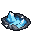
Assets/_Project/Art/Sprites/Moon/SciencePoints/science_point_ice.png
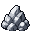
Assets/_Project/Art/Sprites/Moon/SciencePoints/science_point_rim_rock.png
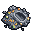
Assets/_Project/Art/Sprites/Moon/SciencePoints/science_point_regolith.png
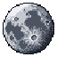
Assets/_Project/Art/Sprites/Launch/Planets/planet_moon.png
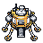
Assets/_Project/Art/Sprites/Moon/Landing/landing_module_moon.png
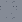
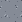
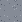
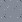
Assets/_Project/Art/Tilesets/Moon/MoonTilesPNG/sand_a..d.png
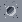
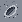
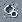
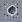
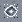
Assets/_Project/Art/Tilesets/Moon/MoonTilesPNG/crater_a..e.png
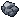
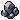
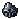
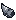
Assets/_Project/Art/Sprites/Moon/Rocks/rock_1..4.png